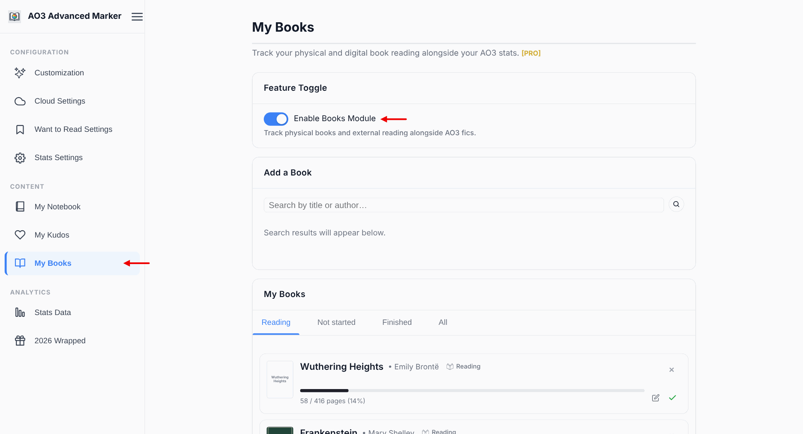
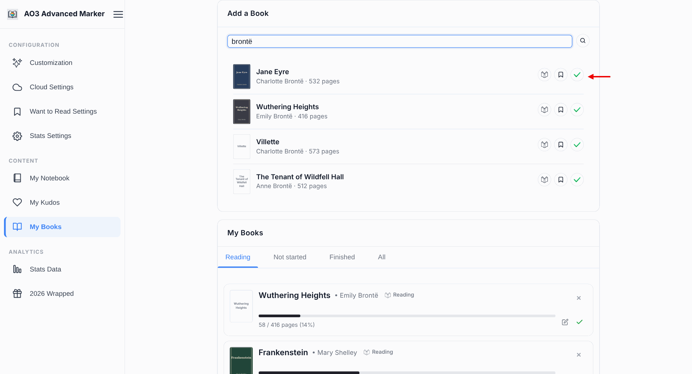
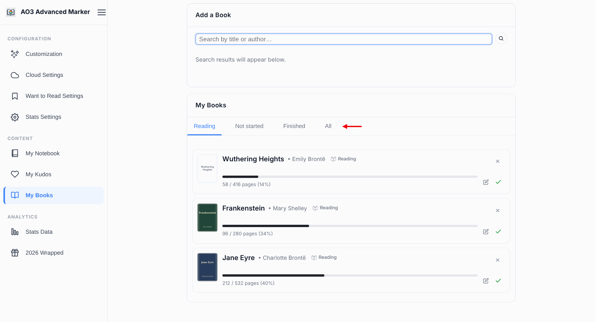
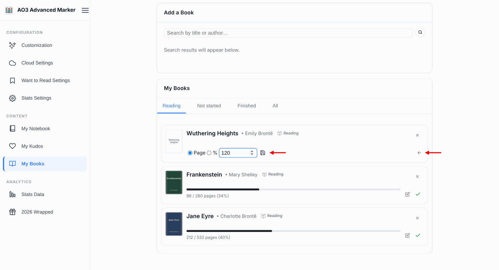
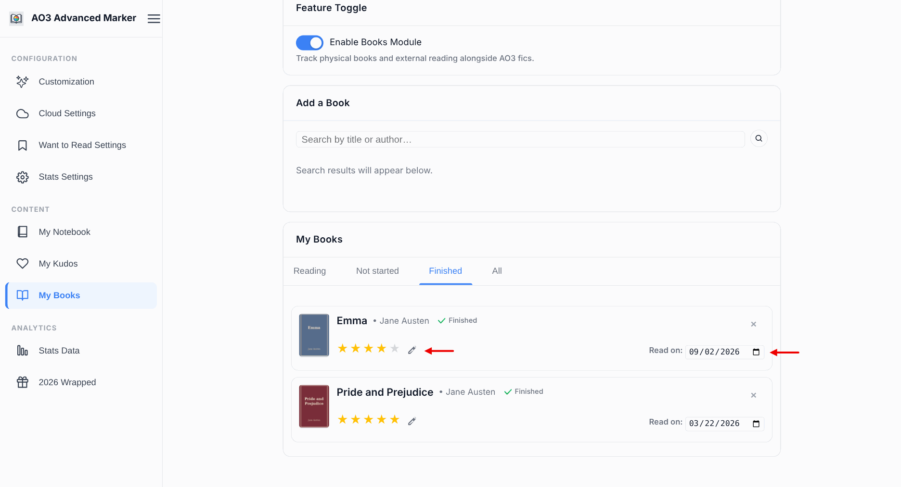
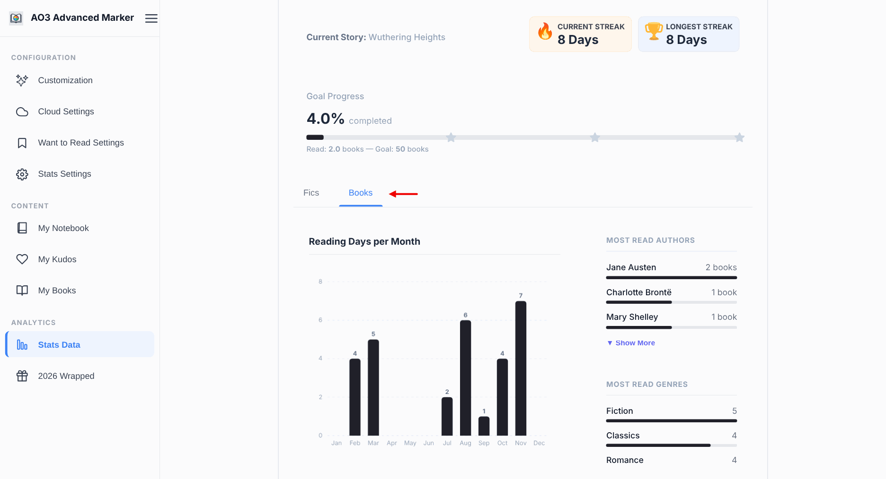
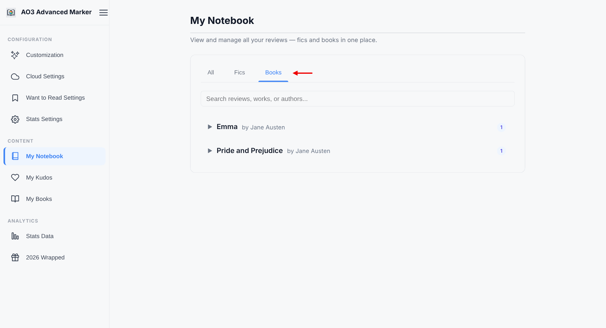

My Books lets you track physical books, e-books and any other reading you do outside AO3. Search for a book, add it to your shelf, log how far you got, and give it a rating and a review when you finish. Finished books count toward your yearly reading goal, together with your fics.
My Books is a PRO feature, available from version 16.0. It also uses your reading stats, so reading tracking needs to be turned on. You don't need to sign in with Google to use it.
Turning On My Books
Open the extension's Options Page and go to Stats Settings in the sidebar. Make sure "Enable Reading Tracking" is on — My Books records your reading there.
Then go to My Books in the sidebar and turn on the "Enable Books Module" switch. It saves right away; there's no need to click Save Settings.

If the page says "Enable Reading Stats first to use the Books module", turn on "Enable Reading Tracking" in Stats Settings and come back.
Adding a Book
In the Add a Book box, type the book's title, its author, or both, and press Enter or click the search icon. The results show the cover, the author and the number of pages.
Each result has three buttons. Pick the one that matches where you are with the book:
- Open book icon — Reading: you're reading it now. You can log your pages right away.
- Bookmark icon — Not started: you want to read it later.
- Check icon — Finished: you've already read it. It counts toward your yearly goal on the day you add it (you can change the date later).

Every word you type has to appear in the title or the author's name, so a short search like "title author" works best. Books come from the free Open Library catalog, so some books — especially non-English editions — may be missing. If a book is already in your Reading or Not started list, the extension lets you know instead of adding it twice.
Your Shelf
Your books are listed under My Books, split into tabs: Reading, Not started, Finished and All. The page always opens on Reading, and the most recently added books come first.
Each book shows its cover and a label with its current status. Books without a cover get a plain cover with their title written on it.
- Start reading: on a Not started book, click the play button to move it to Reading.
- Remove a book: click the × on the book and confirm. This also removes the pages you logged for it from your Stats.

Logging Your Progress
Books in Reading show a progress bar with the page you're on, the total pages and the percentage.
- Click the pencil button on the book.
- Choose Page to type the page you stopped at, or % to type a percentage.
- Click the save button (the floppy disk) to log it.
Your progress is only logged when you click save. Pressing Enter or tapping outside the box doesn't log anything, so a typo won't end up in your history. To give up on what you typed, click the back arrow.

If you log the book's last page (or 100%), it's marked as finished automatically.
Finishing, Rating and Reviewing
When you finish a book, click the check button next to the pencil. The extension asks you to confirm, because a finished book counts toward your yearly goal. The check button uses the same color you picked for Mark as Read.
Finished books move to the Finished tab, where you can:
- Rate it: click the stars (1 to 5).
- Review it: click the pencil next to the stars, write your thoughts, then click anywhere outside the box to save.
- Fix the date: change the "Read on" date if you finished it on another day. Your Stats follow the new date.

Books in Your Stats and Notebook
Yearly goal and streak
Each finished book counts as one book toward your yearly goal. Fics keep counting the way they always did: your words read are turned into books using your Words per "Book" setting. Both add up to the same goal.
Any day you log pages of a book also counts toward your reading streak, just like reading a fic chapter.
The Books tab in Stats
In Stats Data, switch between the Fics and Books tabs. Your goal progress and streak stay at the top, and the Books tab shows:
- Reading Days per Month: how many days you read books each month.
- Most Read Authors and Most Read Genres.
- 5-Star Books Hall of Fame: every book you rated five stars.
- Detailed History: every page you logged and every book you finished.

Book reviews in My Notebook
Your book reviews show up in My Notebook next to your fic reviews. Use the All, Fics and Books filters at the top to see one kind at a time. Deleting a book review there only clears the review and rating — the book stays on your shelf.

Your shelf, ratings, reviews and logged pages are saved with the rest of your data when you back up to Google Drive. See the Google Drive sync guide.